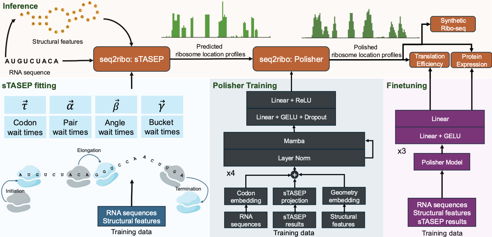

Gün Kaynar, C Kingsford
Bioinformatics 42 (Supplement_1), 2026
Ribosome dynamics are vital in the process of protein expression. Current methods rely on ribosome profiling (Ribo-seq), RNA-seq profiles, and full genomic context. This restricts their use in de novo sequence design, like messenger RNA (mRNA) vaccines. Simulation-only approaches like the Totally Asymmetric Simple Exclusion Process (TASEP) oversimplify translation by focusing solely on codon elongation times. We present seq2ribo, a hybrid simulation and machine learning framework that predicts ribosome A-site locations using only an mRNA sequence as input. Our method first employs a novel structure-aware TASEP (sTASEP), which models translation using a comprehensive set of fitted parameters that include codon wait times and structural features, such as local angles, base-pairing, and discrete positional buckets. The ribosome locations generated by sTASEP are then processed by a polisher model, which learns to refine the simulated ribosome distributions. seq2ribo provides high-fidelity predictions of ribosome locations across diverse cell types (iPSC, HEK293, LCL, and RPE-1), significantly outperforming baselines. seq2ribo is the first method to achieve meaningful positional correlation with observed ribosome profiles from sequence alone, reaching transcript-level Pearson correlations up to 0.920 and within-transcript shape correlations up to 0.186, where all baselines yield near-zero values on these metrics. seq2ribo also reduces elementwise error by up to 37.7% relative to the sequence-only Translatomer baseline. By adding a task-specific head, seq2ribo achieves Pearson correlations up to 0.732 with experimental translation efficiency (TE) across several cell lines, and up to 0.903 with measured protein expression. By operating from sequence alone, seq2ribo provides a new tool for synthetic biology, enabling the rational design and optimization of mRNA sequences without the need for expression-level data or genomic context.
